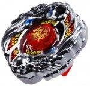

Gryph Girago WA130HF
| Gryph Girago WA130HF | |
|  | |
| Number: | BBG-24 |
|---|---|
| System: | Beyblade Zero-G |
| Type: | Attack |
| Element: | Fire + Thunder |
Contents
Stone Face: Girago
- Weight: grams
This Stone Face has a printed mark representing a Qilin, often referred to as "giraffe" in Japan. It is a horse with a dragon head. The Qilin appears with a fiery mane, and is printed in gold atop a bright red backround.
Chrome Wheel 1: Girago
| Weight: | 31.8 grams | Full Width: | 47.58 mm | Full Height: | 6.77 mm |
Girago is one of the few Chrome Wheels to be mostly symmetrical. Two Chinese dragon heads circle the design, each having a long neck covered by an armor. The heads are in a right-spin direction, and each has a fiery mane. The Chinese dragons each have a pair of hoofed legs extending beyond their heads, and each pair of legs is holding a fiery sphere between the hooves (one of these spheres is hollow, allowing a space for the cylindrical insert of another Chrome/Crystal Wheel to protrude through it). Girago's primary contact points are made up of the dragons' front legs and foreheads, both in the immediate vicinity of the two spheres.
When used as the top Chrome Wheel in a Synchrom
Girago, due to the lack of real advantages it can provide to other Chrome Wheels, has found little to no use as the top Chrome Wheel in a Synchrom. The only way Girago can really be applied as the top Chrome Wheel in a Synchrom is in a substitute Attack custom using the Synchrom Gryph Girago (the most effective Attack Synchrom for Girago if Girago Girago is not available). This Synchrom can be used as a decent Attack substitute if top-tier Chrome Wheels or Girago Girago aren't a possibility.
When used as the bottom Chrome Wheel in a Synchrom
When used on the bottom of a Synchrom, Girago, due to its low recoil, nearly perfect balance, and optimal weight distribution, has been found to be a competitive Chrome Wheel for use in spin-steal combinations when paired with the Dragooon Chrome wheel. In the spin-stealing customization MSF-L Girago Dragooon SA165 [Attack] EWD, Girago provides optimal weight distribution that aids in Precession, as well as the fine balance and relatively low recoil Dragooon needs to steal spin effectively.
When used in Synchrom with another Girago
The Girago Chrome Wheel has multiple competitive uses when doubled in Synchrom. While its Smash Attack is not necessarily top notch, it is impressive to some degree, and it can be used as an Attack substitute if top-tier Attack Chrome/Metal Wheels are not available. Even though Girago's Smash Attack is not exceptionally powerful, it does have uncommonly low recoil for a Wheel of such aggressive design. Because of this moderate Attack ability and exceptionally low recoil, Girago has fit in very well in the category of Anti-Attack, and is considered to be the most effective Chrome Wheel released for this purpose. When used in Standard Format in the Anti-Attack combination MSF-L Girago Girago BD145RF, its mid-powered Smash Attack is more than enough to KO most Stamina customs very well, and, with such low recoil, Girago easily neutralizes virtually every competitive Attack variant in the game, making for a very versatile combination.
However, Anti-Attack is not Girago's only competitive use. Girago has exceptional weight distribution compared to most other Wheels, which allows it to resist rotational recoil (or, in other words, avoid losing rotational velocity when making contact) extremely well. This comes in handy in both the Attack Type Stadium and the Zero-G Stadium when using a combination that aims to out-spin its opponent by aggressively draining their rotational velocity. One of the combinations in which Girago does this best is the E230 destabilizer Girago Girago E230 [Boost] MB. By combining the super round, super smooth, super low recoil shape of Elevator 230's large disk and Girago's rotational-recoil-resistant weight distribution, this custom can grind into its opponents with E230's disk and drain their spin, without losing spin nearly as quickly itself. This very often results in a 100% win rate against Stamina and Defense combinations of heights anywhere from 85 to 195.
All in all, Girago has many uses. It has applicable Smash Attack and low recoil that can be applied very effectively in Standard Format Anti-Attack customizations, and great balance and weight distribution that can be very useful for E230 destabilizers and Dragooon spin-stealing customs in both the Attack Type Stadium and the Zero-G Stadium. All in all, Girago is a very useful Chrome Wheel that should be part of every competitive Blader's collection.
Use in Balance Customization
For the reasons stated above, Girago can be utilized very effectively in the Anti-Attack Balance custom MSF-L Girago Girago BD145RF, as well as the E230 destabilizer Balance custom Girago Girago E230 [Boost] MB.
Use in Stamina Customization
For the reasons stated above, Girago can be utilized very effectively in the Stamina combination MSF-L Girago Dragooon SA165 [Attack] EWD.
Chrome Wheel 2: Gryph
| Weight: | 30.4 grams | Full Width: | 46.09 mm | Minimum Width: | 45.06 mm | Full Height: | 5.01 mm |
Gryph consists of eight distinct sections, similar in shape to those of the Leone Metal Wheel. Four of Gryph's protrusions have spikes curved in a right-spin direction, and the other half of the sections mostly consists of straight boulders, like on Bakushin. One of the latter sections is however in the shape of an eagle head viewed from a profile perspective, with the orb from the Crystal Wheel showing on the left border of the head. Opposite of the eagle head, Gryph has one main contact point that helps to provide Force Smash, when used as a Synchrom Bottom Wheel; Upper Smash, as a Synchrom Top Wheel.
When used as the top Chrome Wheel in a Synchrom
When used as a top Chrome Wheel, Gryph's compact shape makes it barely extend beyond other Chrome Wheels' circumferences. This means it can't make solid contact in most cases.
However, Gryph performs excellently on one Chrome Wheel: Pegasis. Because of the direction of Pegasis' smaller wings, Pegasis has more Smash on the bottom of a right-spin Synchrom customization. Gryph can fully expose those contact points, as well as help to increase the spin velocity of the combo. While this Synchrom isn't considered top-tier, it is a decently competitive substitute if a top-tier Synchrom is not available.
Gryph can be used in the Attack combination MSF-H Pegasis Gryph W145R²F.
When used as the bottom Chrome Wheel in a Synchrom
Gryph, similar to its situation when at the top of a Synchrom, does not go past many Chrome Wheels on the bottom of a Synchrom. However, its smaller diameter helps in two ways: an increase in spin velocity due to the concentration of the weight, and revealing the contact points of the other Chrome Wheel. Gryph can enhance the top Chrome Wheel by giving it a higher RPM, which will allow more contact points to hit. Gryph also has a good amount of Force smash, which can help when facing lower opponents. Despite this, it is still outclassed by Chrome Wheels in Synchrom with themselves, such as the Wyvang Wyvang Synchrom. If two Wyvangs are not at a Blader's disposition, however, it can be used as a substitute in combos such as MSF-H Gryph Wyvang GB145R²F.
When used in Synchrom with another Gryph
Gryph can fully expose its main contact points when combined in Synchrom with itself, which creates a powerful Smash Attack customization. It also has a lot of Force Smash, due to its large Force Smash slopes. Despite this, Chrome Wheels such as Wyvang and Begirados outperform Gryph for Smash Attack.
The Gryph Gryph Synchrom does find use in Balance customs though. Thanks to Gryph's Force Smash, it can KO Stamina Types when used on a high-Track Balance combo. When paired with the E230 Track, it can also outspin most Defense Types that have tall Tracks because of the grinding from E230's disk. Thus, combining it with E230 helps defend against attackers and grind down the stamina of Defense Types. On top of that, with the Bottom BSF, which has nice stamina while still having the tendency to roam around the stadium, Gryph Gryph has excellent use in the custom MSF-H Gryph Gryph E230BSF.
Track: Wing Attacker 130
| Weight: | 2.2 grams | Full Width: | 39.17 mm | Minimum Width: | 25.21 mm | Full Height: | 13.00 mm |
WA130 is a 130-height Track with two aerofoil-shaped wings that rotate freely around the Track. By removing this piece, and flipping it over, the direction of the wings can be changed. These wings are negligible in battle: while they offer minor protection against lower Attack-Type opponents, there are better Tracks for this purpose. As the wings can scrape along the stadium floor, causing a loss of spin, WA130 is useless in Stamina combinations.
The main appeal of this Track is its height. The 130 height has proven useful in certain Attack customizations. However, as it cannot make contact with lower opponents due to its free-spinning nature, it is considered less useful for this purpose than S130. In addition, the most popular user of this height, Fang, already comes with a plain 130 Track in its only release, Fang Leone 130W²D. As WA130 offers little advantage over 130, it is not considered a worthwhile purchase. The WA130 on Gryph Girago WA130HF is translucent red-orange in color.
Bottom: Hole Flat
| Weight: | 0.5 gram | Full Width: | 15.95 mm | Tip Width: | 4.01 mm | Hole Diameter: | 2.27 mm | Full Height: | 8.96 mm | Tip Height: | 6.02 mm |
HF has a very similar movement speed to that of F, with the main difference being a slight Stamina improvement due to the hole in the middle of the Tip. But, with this comes the detriment of even less grip to the stadium floor than F, and also increased fragility.
The HF on Gryph Girago WA130HF is translucent red-orange in color.
Other Versions
- Thief Zirago WA130HF - Hasbro Starter (Yellow Crystal Wheel, opaque red WA130 & translucent blue HF)
Gallery
Overall
Overall, while WA130 and HF are virtually useless, Gryph is a decent Chrome Wheel for use in Attack and Balance customizations, and Girago is an extremely versatile Chrome Wheel that every competitive collection should feature. As the BB-24 Sychrom DX set Attack and Balance in which this Beyblade is found is relatively expensive, if the other parts in the set aren't desired, it is recommended that one purchase Hasbro's version, Thief Zirago, for a cheaper alternative. Every competitive Blader should own at least two of either this Beyblade, or Hasbro's version, Thief Zirago.